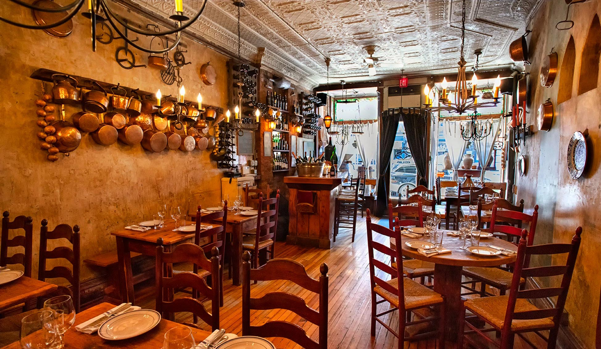
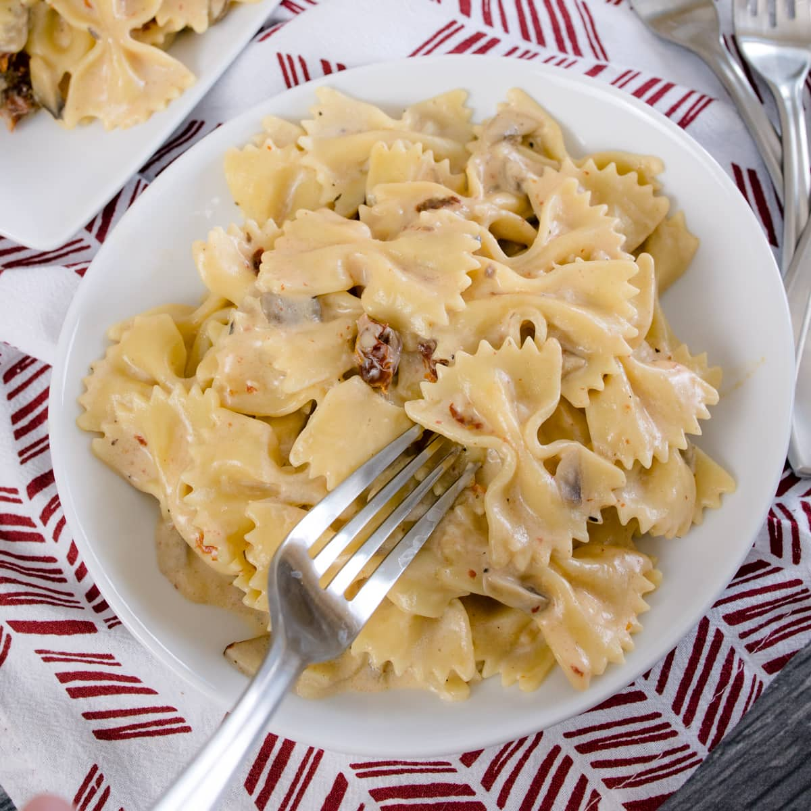
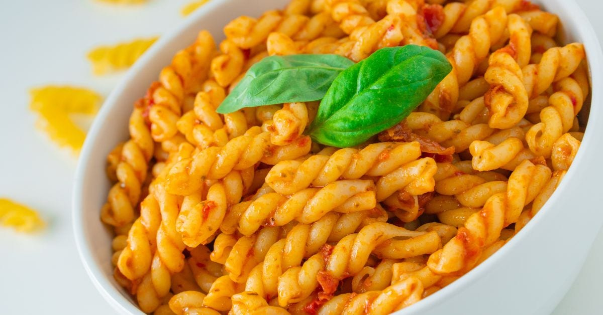
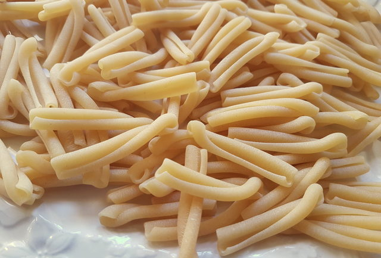
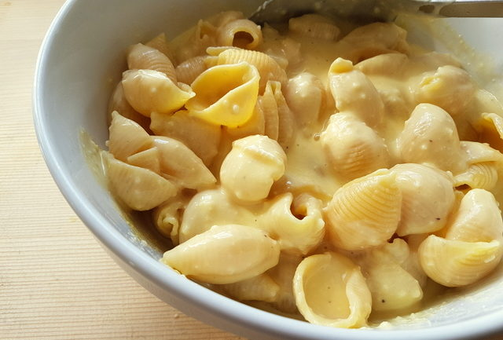
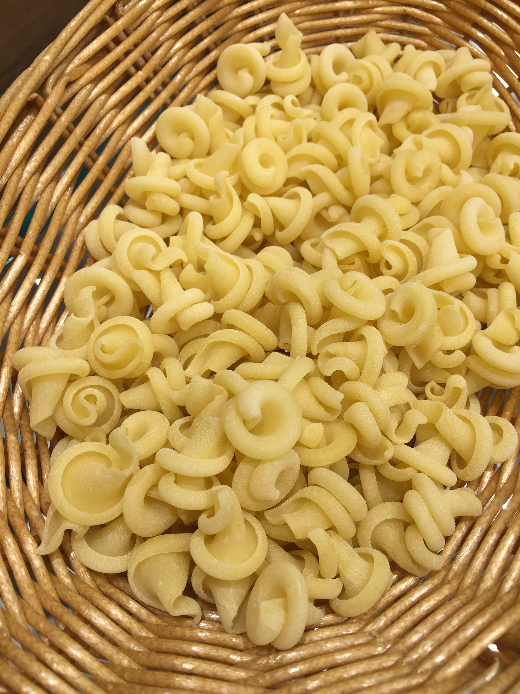

before anything, turn up your volume and press play on the sound above.
done? ok, picture this: you are sitting in a cozy italian restaurant, excited to eat some good food.
suddenly, you are given a menu of pastas that you have never seen before. oh no! you think, what am I going to do?
i am here to help you!!! today I am going to list my top 5 favorite pasta shapes. lets start.
My Top 5 Favorite Pasta Shapes
5. Bowties
sometimes, you’ve gotta go with a classic. Bowties have always been fun to eat. However, I find it annoying when they un-bowtie. I also dislike that you have to meticulously place your fork between the folds to keep it from falling apart.
4. Gemelli
These are super fun to eat. They hold a lot of sauce (both in the hole and outside), plus are twisty!
3. Casarecce
These are like sophisticated rigatonis. It is nice when the shape starts un-twisting because you can pull it apart (kind of like a cheese stick).
2. Conch
imagine you could digest tiny bowls. now imagine eating several tiny bowls of sauce in one bite. that is what the conch is like.
1. Insalatonde
These are perfect in every way possible. They are thick in some parts to maintain the pasta dough flavor, while the bowl part still holds a lot of sauce that bursts in your mouth. 10/10
if you would like to see some saucy sauces for your pasta, click here